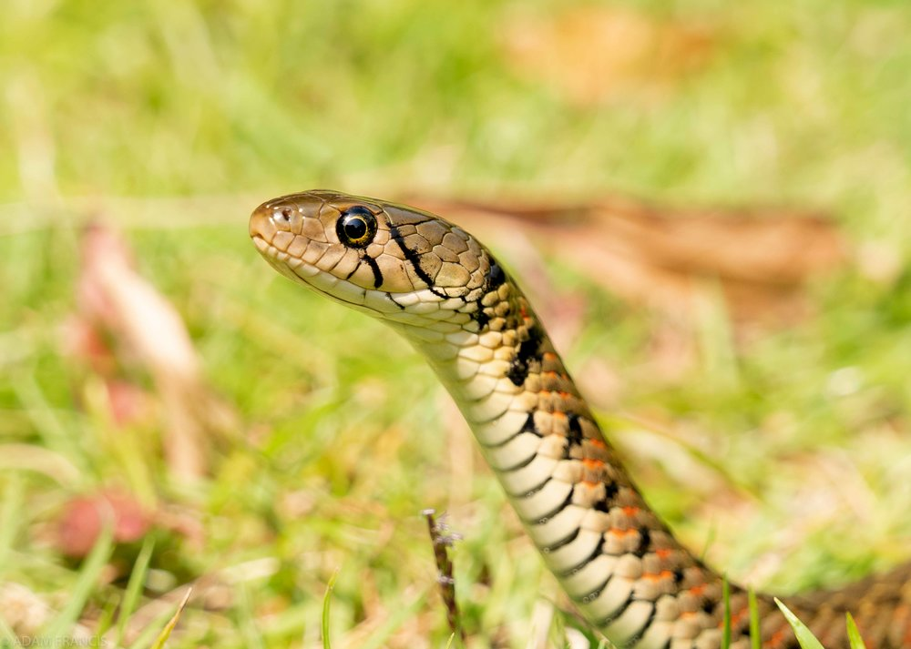

The Checkered Keelback (Fowlea piscator) is a non-venomous, semi-aquatic snake found across South and Southeast Asia, thriving in freshwater habitats like rivers, lakes, and marshes.
It grows 1 to 1.5 meters long and has an olive-green to brown body with a distinct black and yellow checkered pattern.
Its keeled scales give it a rough texture, and its large, round eyes help it hunt fish, frogs, and other aquatic prey.
Though generally non-aggressive, it may hiss, flatten its body, or bite defensively, but its bite is harmless to humans.
When disturbed, it prefers to flee into the water but may release a foul-smelling musk if handled.
Despite its importance in controlling aquatic prey populations, it is often mistaken for a venomous snake and unnecessarily killed.
Physical Characteristics
The Checkered Keelback (Fowlea piscator) is a medium to large-sized snake, typically measuring 1 to 1.5 meters, with some individuals reaching up to 2 meters.
It has an olive-green, brown, or grayish body covered with a distinct black and yellow checkered pattern, which helps in camouflage near water bodies.
Its scales are strongly keeled, giving the snake a rough texture.
The head is broad and slightly distinct from the neck, with large, round eyes that have well-developed pupils, suited for its diurnal (daytime) activity.
The underbelly is pale yellow or whitish, sometimes with dark speckles.
Its muscular body allows for both swift swimming and rapid movement on land, making it an efficient hunter in aquatic environments.
Habitat
The Checkered Keelback (Fowlea piscator) is a semi-aquatic snake commonly found in freshwater habitats across South and Southeast Asia.
It thrives in rivers, lakes, ponds, marshes, paddy fields, and irrigation canals, often seen basking near water or swimming with its head above the surface.
This adaptable species can also be found in urban water bodies, such as reservoirs and drainage systems.
It prefers slow-moving or stagnant water with abundant vegetation, where it can easily hunt for fish and amphibians.
While mainly found at low to mid-elevations, it has also been recorded in hilly regions with suitable water sources.
Despite its adaptability, habitat destruction and water pollution pose threats to its population.

Diet and Behavior
The Checkered Keelback (Fowlea piscator) is a carnivorous, semi-aquatic snake that primarily feeds on fish, frogs, and tadpoles, occasionally consuming small birds, rodents, or insects.
It is an active hunter, striking quickly and using its flexible jaws to swallow prey whole.
Its keen eyesight and strong swimming ability help it catch fast-moving prey in water.
This diurnal species is most active during the day, though it may hunt at night in warm conditions.
While non-venomous, it can be defensive when threatened, hissing, flattening its body, or striking aggressively, though its bite is harmless to humans.
It prefers to escape into water, but if cornered, it may release a foul-smelling musk.
It is often mistaken for a venomous snake due to its aggressive behavior, leading to unnecessary killings.
Despite this, the Checkered Keelback plays an important role in maintaining aquatic ecosystems.
Bite & Jaw Mechanism
The Checkered Keelback (Fowlea piscator) has a non-venomous bite and lacks specialized fangs.
Instead, it has small, sharp, recurved teeth designed for gripping and holding onto slippery prey like fish and frogs.
Its jaw mechanism is highly flexible, allowing it to open its mouth wide and swallow prey whole.
The upper and lower jaws move independently, aiding in the ingestion of larger prey items.
Although harmless to humans, the Checkered Keelback can be aggressive when threatened, often striking multiple times in defense.
While its bite may cause minor scratches, it does not inject venom.
Instead of relying on its bite for defense, it prefers to escape into water or release a foul-smelling musk to deter predators.